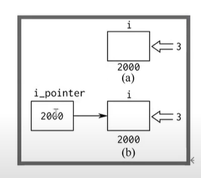

*vs&
*：内容
&：地址
*p 指的是p的内容所指的地址的内容
&p指的是p这个地址
*&p能直接更改，相当于操作实参
&是取地址运算符/也叫做引用
1 | int i=3; |
指针变量的初始化一定是某一个变量的取地址；
int *=&;

运算符优先级
指针访问和初始化
访问
1 | printf("i=%d\n", i); //直接访问 |
malloc初始化
1 | int *p = NULL; |
指针自身 = (指针类型）malloc（sizeof（指针类型）数据数量）
指针的大小
32位系统：4个字节
64位系统：8个字节
传参
引用传递
1 | void change(int &i){ |
地址传递
1 | void change(int *i){ //i是形参，i=&n，将n的地址带入i，i是n的地址值，*i是n的值 |
值传递
1 | void change(int i){ //i是形参，i=n |
值传递和引用传递的比较：
值传递操作的不是n变量本身，只是将n的值赋给了i。函数里操作的只是i变量而不是n。引用传递里操作的是n变量本身。
数组
1 | int main(){ |
如果是 j=(p)++; //第一步j=p;（p）++ 其中（p）是a的值，所以*p++，等同于a[0]++，或者p[0]++;
应该是2 1 2
数组名作为传参的时候，会被弱化为指针。
1 | void change(int *i){ |
不可以更改指向常量的指针：
1 | char *p="hello"; |
常量指针
如果const修饰在pi前面，则不能修改的是pi，也就是不能pi=50，但是可以pi=&v；
如果const修饰pi前面，则pi不能修改，也就是不能pi=&i，但是pi=80可以。